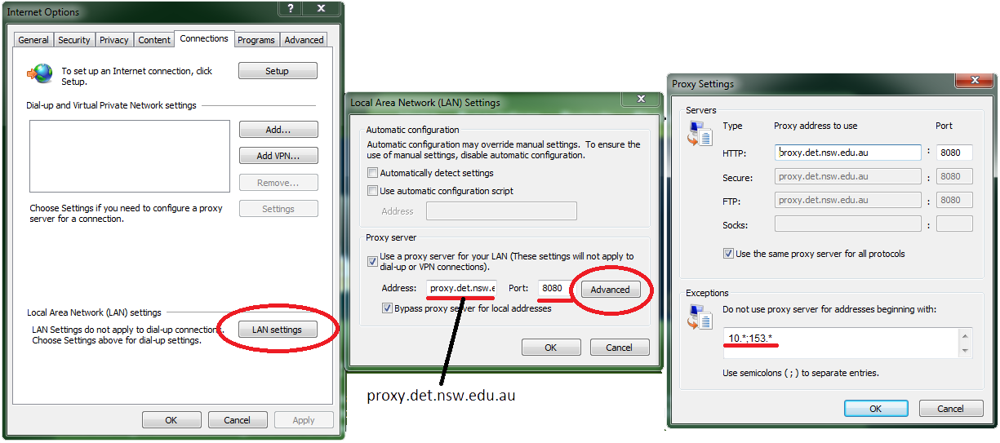

So you want to bring your own device?
You are welcome to bring your own device to class. However, as we are using professional design tools and workflows there are some requirements to ensure you can fully engage in the learning and use professional standard tools.
Basic Specifications:
Before your bring your BYOD device to class, it must meet the following critera. Please do not bring your device to class unless it meets this criteria or use class time to bring your device up to this specification. MD in the library will support you configuring wireless and instaling the DEC provided CS6 and Office applications. Browsers and Blender can be downloaded from the resources page.
-
Basic specifications:
- 64bit architecture & operating system
- Minimum of dual core processor with 4gb RAM
- Connects to school WiFi
- Mouse with middle button (recommended model: Logitech M905)
-
Compulsory configuration:
- U:\ drive is mapped as below
- Proxy configured
- Adobe CS6 (or newer) installed
- Microsoft Office 2010 or LibreOffice 4.2 (or newer) installed
- Blender 2.69 installed
- Atleast 2x browsers
- Administrator rights to install applications
- Adobe PDF reader installed
- Adobe PDF printer installed
- Windows 7 must be updated to SP1 (including Internet Explorer 11)
- Windows 8 must be updated to Windows 8.1 (including Internet Explorer 11)
- Add "det.nsw.edu.au" to compatability view settings in ie11
Support Documents
- Android WiFi connection
- MacBook WiFi connection
- iPad/iPhone5 WiFi connection
- Windows WiFi Connection
- Connecting to U:\ Drive
- Printing at school
Proxy Exclusion Rules
Please ensure that the following servers are added as exclusion in your proxy settings:
10.*
153.*
This is the settings for windows users:
